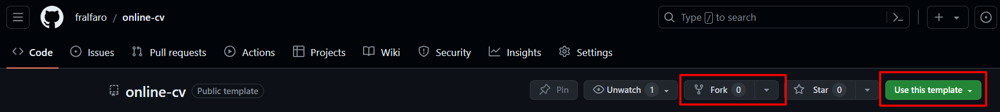
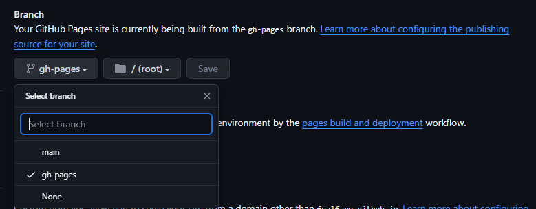
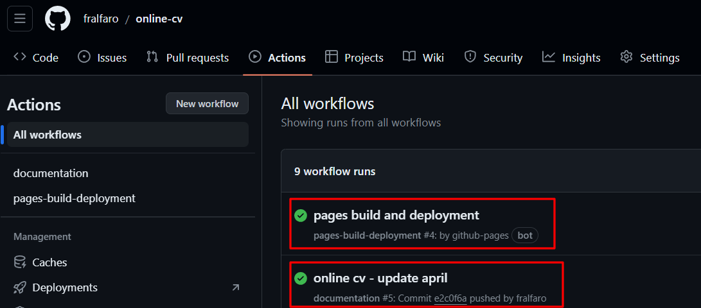
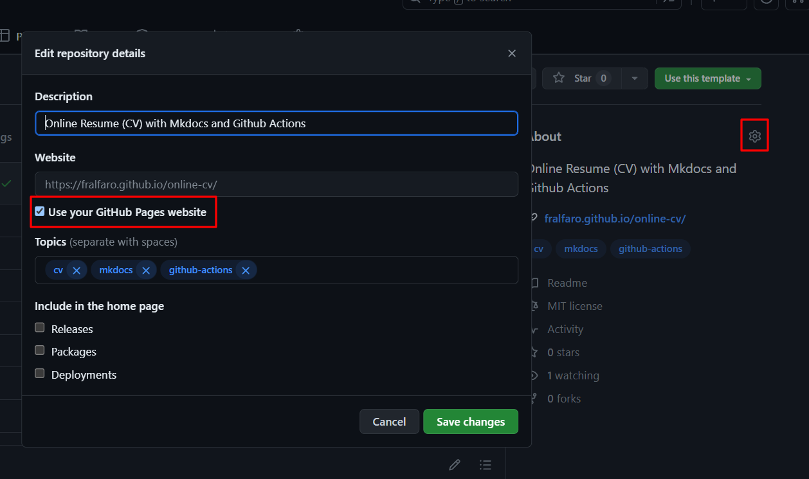

Aprendiendo sobre Github Actions

En el vertiginoso mundo del desarrollo de software, la capacidad de implementar cambios de forma rápida y fiable se ha vuelto crucial para mantenerse competitivo. La Integración Continua (CI) y la Entrega Continua (CD) son prácticas fundamentales que permiten a los equipos de desarrollo automatizar y optimizar el ciclo completo de construcción, pruebas y despliegue de aplicaciones.
En este artículo, exploraremos los conceptos de CI/CD y su importancia para los equipos de desarrollo, centrándonos en GitHub Actions y GitHub Pages. Además, aprenderemos cómo aplicar estos conceptos en la generación de documentación y sitios web estáticos mediante un ejemplo práctico.
üîë Nota: Para seguir este tutorial, es necesario disponer de una Cuenta en GitHub. Además, se recomienda actualizar tu foto de perfil y tu nombre de usuario.
GitHub Actions
¿Qué es CI/CD?
La Integración Continua (CI) es un enfoque en el que los desarrolladores integran su código en un repositorio compartido de manera frecuente, desencadenando automáticamente un proceso de construcción y pruebas para verificar la calidad del código.
Por otro lado, la Entrega Continua (CD) es una extensión de la CI que se enfoca en automatizar la entrega de software probado y validado a entornos de producción o preproducción de manera rápida y confiable.
Beneficios de CI/CD
- Mayor Calidad del Software: La detección temprana de errores y la automatización de pruebas garantizan una mayor calidad del código.
- Entrega Más Rápida: La automatización de los procesos de construcción y despliegue acelera el tiempo de lanzamiento al mercado.
- Menor Riesgo: La entrega frecuente y confiable reduce el riesgo de implementaciones fallidas.
- Retroalimentación Instantánea: Los desarrolladores reciben retroalimentación inmediata sobre la calidad de su código.
- Mayor Colaboración: La integración frecuente fomenta la colaboración entre los miembros del equipo y mejora la transparencia en el proceso de desarrollo.
¿Qué es GitHub Actions?
GitHub Actions es una plataforma de automatización de flujo de trabajo integrada en GitHub que permite a los equipos de desarrollo automatizar todo el ciclo de vida del desarrollo de software, incluyendo la integración continua (CI) y la entrega continua (CD).
Con GitHub Actions, los equipos pueden definir flujos de trabajo personalizados en archivos YAML dentro de sus repositorios de GitHub, lo que les permite automatizar tareas como la construcción, las pruebas y el despliegue de aplicaciones de manera fácil y flexible.
Implementación
A continuación, se muestra un ejemplo básico de un archivo YAML de GitHub Actions para un flujo de trabajo de CI/CD:
name: CI/CD Pipeline
on:
push:
branches:
- main
jobs:
build:
runs-on: ubuntu-latest
steps:
- name: Checkout Repository
uses: actions/checkout@v2
- name: Build and Test
run: |
npm install
npm test
- name: Deploy to Production
if: success()
run: |
npm run build
# Comandos para desplegar la aplicación en producciónEn este ejemplo, el flujo de trabajo se desencadena en cada push al branch “main”.
El flujo de trabajo incluye tres pasos:
- checkout del repositorio,
- construcción y prueba de la aplicación, y
- despliegue de la aplicación en producción si las pruebas son exitosas.
GitHub Pages
¿Qué es GitHub Pages?
GitHub Pages es un servicio de alojamiento web gratuito proporcionado por GitHub que permite a los usuarios crear y publicar sitios web estáticos directamente desde sus repositorios de GitHub.
Con GitHub Pages, los desarrolladores pueden aprovechar la infraestructura de GitHub para alojar y compartir documentación, sitios web personales, blogs y más. La configuración de GitHub Pages es sencilla, y los sitios web se actualizan automáticamente cada vez que se realiza un cambio en el repositorio, lo que facilita la publicación de contenido nuevo y actualizado.
Configuración
Para habilitar GitHub Pages para un repositorio, sigue estos pasos:
- Ve a la pestaña “Settings” (Configuración) de tu repositorio en GitHub.
- Desplázate hacia abajo hasta la sección “GitHub Pages”.
- Selecciona la rama y la carpeta del repositorio que deseas utilizar para publicar tu sitio web.
- Haz clic en “Save” (Guardar).
Beneficios
- Facilidad de Uso: Configuración simple y actualizaciones automáticas hacen que sea fácil publicar y mantener sitios web estáticos.
- Gratuito y Sin Limitaciones: GitHub Pages es un servicio gratuito y no tiene limitaciones en cuanto a la cantidad de sitios web que puedes alojar.
- Integración con GitHub: GitHub Pages está integrado directamente en GitHub, lo que facilita la administración y la colaboración en el contenido del sitio web.
Ejemplo Práctico
El repositorio Online CV tiene como propósito facilitar la creación de tu propio currículum vitae en línea utilizando mkdocs (python).
El objetivo principal es utilizar GitHub Actions y GitHub Pages para mostrar tu CV de manera online. Sería ideal que los usuarios clonaran el repositorio utilizando la opción fork o Use this template para poder personalizar su propio currículum vitae.

üîë Nota:
Sobre la estructura del repositorio

.github/workflows: Contiene archivos YAML que definen flujos de trabajo automáticos con GitHub Actions. Estos flujos especifican acciones ante eventos específicos como confirmaciones o solicitudes de extracción.
docs: Es el lugar para la documentación del proyecto, usualmente en formatos como Markdown o HTML. Incluye guías de uso, contribución y normas de codificación.
.gitignore: Define qué archivos y carpetas Git debe ignorar. Evita que archivos no deseados se incluyan en los commits o ramas, como archivos de configuración local o dependencias.
LICENSE: Contiene los términos legales de distribución del proyecto, estableciendo los derechos y restricciones para los usuarios. Tipos comunes de licencias son MIT, GPL y Apache.
README.md: Un archivo Markdown que ofrece información básica sobre el proyecto, incluyendo su propósito, instrucciones de instalación y cómo contribuir. Es el primer punto de contacto para desarrolladores y usuarios.
mkdocs.yml: Configura MkDocs, una herramienta para generar documentación estática desde archivos Markdown. Define la estructura y ajustes del proyecto, como los temas y archivos de documentación.
pyproject.toml: Un archivo de configuración en proyectos Python según PEP 518. Define las dependencias del proyecto, versiones de Python compatibles y otras configuraciones usando TOML.
üîë Nota: Aunque la estructura para crear otros sitios estáticos con diferentes lenguajes de programaci√≥n puede variar según los requisitos del proyecto, la l√≥gica para ejecutar GitHub Actions sigue siendo la misma. Esto significa que puedes adaptar estos pasos a tus necesidades espec√≠ficas, independientemente del lenguaje o la tecnolog√≠a que est√©s utilizando.
Utilizando Github Actions
En la carpeta .github/workflows existe el archivo documentation.yml, que gatilla el pipeline cada vez que se realiza un push.
name: documentation
on: [push]
jobs:
Pages:
runs-on: ubuntu-latest
strategy:
matrix:
python-version: [3.10.x ]
steps:
- uses: actions/checkout@v2
- name: Set up Python ${{ matrix.python-version }}
uses: actions/setup-python@v2
with:
python-version: ${{ matrix.python-version }}
- name: Install dependencies
run: pip install poetry
- name: Activate venv
run: poetry install
- name: Build the book
run: poetry run mkdocs build --site-dir public
- name: GitHub Pages action
uses: peaceiris/actions-gh-pages@v3
with:
github_token: ${{ secrets.GITHUB_TOKEN }}
publish_dir: ./publicEn primer lugar, se especifica que el trabajo se ejecutará en la plataforma Ubuntu más reciente disponible en GitHub Actions.
Se utiliza una estrategia de matriz para ejecutar el trabajo en diferentes versiones de Python. En este caso, se ejecutará en la versión 3.10.x.
Los pasos del trabajo comienzan clonando el repositorio utilizando la acción predefinida
actions/checkout@v2.Luego, se configura un entorno Python utilizando la acción
actions/setup-python@v2, asegurándose de que la versión coincida con la especificada en la matriz.A continuación, se instala la herramienta de gestión de dependencias Poetry mediante el comando
pip install poetry.Una vez instaladas las dependencias de Poetry, se ejecuta el comando
poetry installpara instalar las dependencias del proyecto.Después, se activa el entorno virtual creado por Poetry ejecutando
poetry run.Se genera la documentación del proyecto utilizando MkDocs con el comando
mkdocs build --site-dir public.Finalmente, se implementa la documentación en GitHub Pages utilizando la acción de terceros
peaceiris/actions-gh-pages@v3. Se proporciona el token de acceso de GitHub almacenado en la variable secretaGITHUB_TOKENy se especifica el directorio de publicación de la documentación como./public.
Activando Github Actions
Dirígete a Setting -> Actions -> General:

En Workflow permissions, seleccionar
Read and write permissionsyAllow GitHub Actions to create and approve pull requests, luego guarda los cambios enSave.
üîë Nota: El pipeline se activará automáticamente al realizar tu primer push a la rama
main. Asegúrate de tener GitHub Actions activado para que funcione correctamente. Para obtener más detalles, consulta la Documentación Oficial de GitHub Actions.
Activando Github Pages
Dirígete a Setting -> Pages:

Ir Branch, seleccionar
gh-pages, luego guarda los cambios enSave.
üîë Nota : El pipeline se activará automáticamente al realizar tu primer push a la rama
main. Una vez finalizado, podrás llevar a cabo los pasos mencionados anteriormente. Para obtener más detalles, consulta la Documentación Oficial de GitHub Pages.
Pipeline en Funcionamiento
Para verificar que todo esté funcionando correctamente, dirígete a Actions y deberías ver lo siguiente:

Aquí tienes una descripción de lo que ves:
online cv - update april: Representa el commit que desencadenó el pipeline de GitHub Actions.pages build and deployment: Es el pipeline de trabajo que se ejecuta una vez que el pipeline del commit esté completo.
üîë Nota: Si necesitas más detalles sobre los pipelines, simplemente haz clic en cada uno de ellos. Tambi√©n puedes acceder a los pipelines de trabajo del repositorio online-cv/actions para obtener más informaci√≥n.
Acceso a la Documentación
Una vez completado el proceso, dirígete a tu proyecto. En la parte derecha, donde se muestra la descripción del proyecto, encontrarás el icono de un engranaje ⚙️.
Haz clic en él y verás una imagen similar a esta:

Selecciona la opción Use your GitHub Pages website y verás automáticamente debajo de la descripción el enlace hacia la documentación generada por GitHub Actions y GitHub Pages.
üîë Nota: La documentaci√≥n de este proyecto está disponible en el siguiente enlace: fralfaro.github.io/online-cv/
Conclusion
En conclusión, hemos implementado con éxito GitHub Actions y GitHub Pages en nuestro proyecto, lo que ha mejorado significativamente su gestión y visibilidad:
GitHub Actions: Configuramos flujos de trabajo automatizados que se activan en respuesta a eventos específicos, como los cambios en el repositorio. Estos flujos de trabajo automatizan tareas como la generación de la documentación del proyecto utilizando MkDocs y la implementación de esta documentación en GitHub Pages.
GitHub Pages: Configuramos GitHub Pages para desplegar automáticamente la documentación generada por nuestros flujos de trabajo de GitHub Actions. Esto proporciona un acceso fácil y conveniente a la documentación del proyecto para los colaboradores y usuarios potenciales.
En conjunto, estas herramientas nos permiten mantener la documentación del proyecto actualizada de manera automática y proporcionar un acceso rápido y sencillo a esta documentación a través de GitHub Pages. Esto mejora la colaboración y la visibilidad del proyecto, facilitando su uso y contribución para todos los involucrados.